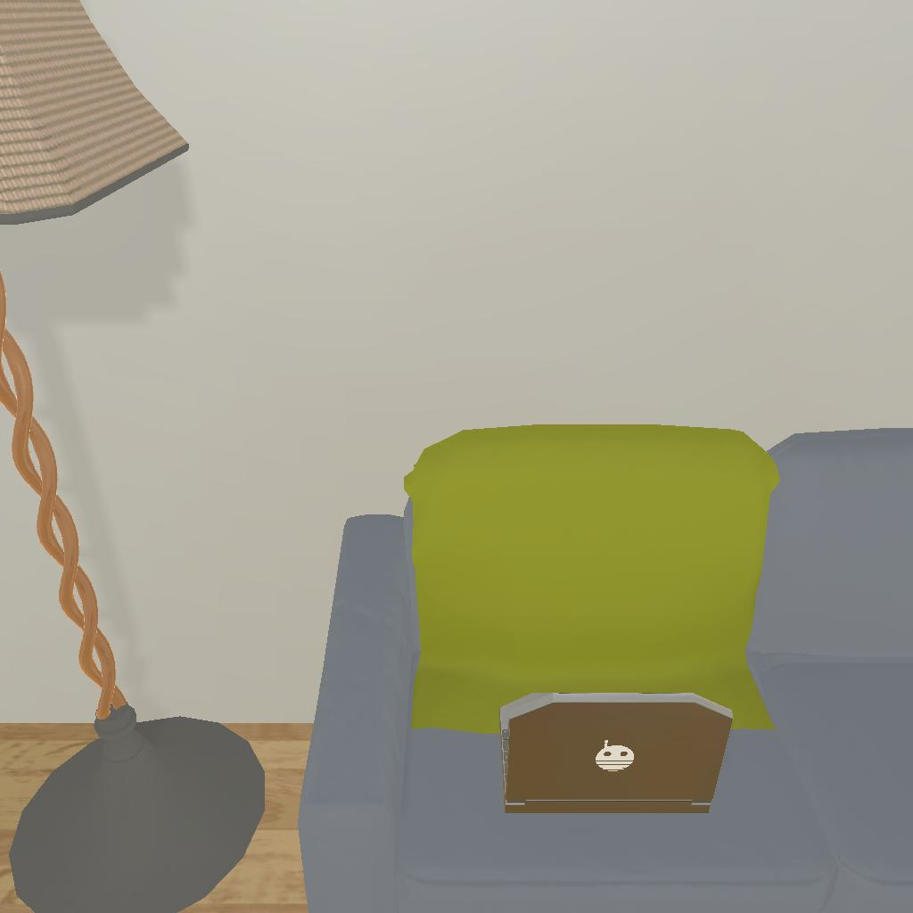

---------------------------------------------------------task: 4---------------------------------------------------------
--------------------------------------------------------------------------------------------------------------------------------------------------------------------
--------------------------------------------------------------------------------------------------------------------------------------------------------------------
Step:--------------------------------------------------------------------------0-------------------------------------------------------------------------------
----------------------------------------
VLM Prompt:
Image1:
**Instruction**
1. Analyze the provided image to identify all visible household objects, focusing on those relevant to the task description "examine the statue with the floorlamp."
2. Use the analysis of the image and the task hint "The agent must find an object of the desired type, locate and turn on a light source with the desired object in-hand." to answer the question: what is the most reasonable action in the choices for the task description "examine the statue with the floorlamp"?
4. Decide and write the answer using the template: The answer is: (i): , where i is the real number. If there is no desired object in the image, search every place based on **Initial Observation** to find the object. And if no one is exactly correct, choose a similar answer.
**Initial Observation**
You are in the middle of a room. Looking quickly around you, you can see armchair (1), coffeetable (1-2), sidetable (1), garbagecan (1), drawer (1), sofa (1), diningtable (1)
**Answer Choices**
(1): go to armchair 1
(2): go to coffeetable 1
(3): go to sidetable 1
(4): go to garbagecan 1
(5): go to drawer 1
(6): go to sofa 1
(7): go to coffeetable 2
(8): go to diningtable 1
**Answer**
Let's think step by step by following the instructions.
----------------------------------------
----------------------------------------
Original Response:
Firstly, we need to identify all visible household objects relevant to the task description. In the image provided, we see a floor lamp next to an armchair. There is no visible statue in the image, so we must search every place based on the Initial Observation to find the object.
The task hint suggests that the agent must find an object of the desired type (the statue) and then locate and turn on a light source (the floor lamp) with the desired object in hand.
Based on the Initial Observation, the places where a statue is likely to be found in a household setting would be on a coffeetable, sidetable, or a drawer. It is less likely to be found on an armchair, sofa, dining table, or in a garbage can.
Considering these factors, the most reasonable action to find the statue would be to go to places where small decorative objects like statues are usually placed. Among the provided options, the sidetable and the drawer are the most likely places to find such an object.
Since there is only one sidetable in the options given, the answer is:
The answer is: (3): go to sidetable 1.
----------------------------------------
----------------------------------------
>>> Refine Original VLM Response and Get Pure Action: go to sidetable 1
----------------------------------------
-----------------------------------------------------------------
Running time: 9.431575059890747 seconds
Total Money: 1.0064699999999998
-----------------------------------------------------------------
-----------------------------------------------------------------
Text Observation:You arrive at loc 2. On the sidetable 1, you see a statue 1, and a pen 1.
-----------------------------------------------------------------
UNSUCCEED